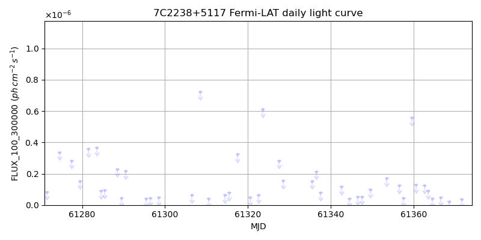
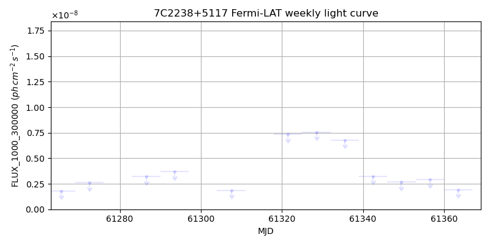

LAT Lightcurve site: https://fermi.gsfc.nasa.gov/ssc/data/access/lat/msl_lc/source/7C_2238p5117
NED: Query
Time of last update of this page: UT: 2026-11-28 16:29 (MJD: 61372.687)
| Property | Value |
|---|---|
| R.A. | 22:40:19.92 |
| Dec. | 51:33:10.8 |
| z | 0.000 |
| 3FGL SpectrumType | |
| 3FGL PL Index | -1.00 |
| 3FGL Flux_100_300000 | -1.00e+00 |
| 3FGL Flux_1000_300000 | -1.00e+00 |
| 3FGL Flux >200 GeV | -1.00e+00 |
| 3FGL Extrap. Crab >200 GeV | -1.00 |
| 3FGL Flux After EBL Absorption >200GeV | -1.00e+00 |
| 3FGL EBL Crab Fraction >200GeV | -1.00 |

| MJD | dMJD | Flux | dFlux | Frac3FGL | FracCrab>200GeV | EBLFracCrab>200GeV |
|---|---|---|---|---|---|---|
| 61363.50 | 0.50 | 8.91e-08 | 0.00e+00 | 0.00 | 0.00 | -0.00 |
| 61364.50 | 0.50 | 4.15e-08 | 0.00e+00 | 0.00 | 0.00 | -0.00 |
| 61366.50 | 0.50 | 4.76e-08 | 0.00e+00 | 0.00 | 0.00 | -0.00 |
| 61368.50 | 0.50 | 2.38e-08 | 0.00e+00 | 0.00 | 0.00 | -0.00 |
| 61371.50 | 0.50 | 3.59e-08 | 0.00e+00 | 0.00 | 0.00 | -0.00 |
| MJD | dMJD | Flux | dFlux | Frac3FGL | FracCrab>200GeV | EBLFracCrab>200GeV |
|---|---|---|---|---|---|---|
| 61335.50 | 3.50 | 1.96e-08 | 0.00e+00 | 0.00 | 0.00 | -0.00 |
| 61342.50 | 3.50 | 1.66e-08 | 0.00e+00 | 0.00 | 0.00 | -0.00 |
| 61349.50 | 3.50 | 8.46e-09 | 0.00e+00 | 0.00 | 0.00 | -0.00 |
| 61356.50 | 3.50 | 9.28e-09 | 0.00e+00 | 0.00 | 0.00 | -0.00 |
| 61363.50 | 3.50 | 7.27e-09 | 0.00e+00 | 0.00 | 0.00 | -0.00 |

| MJD | dMJD | Flux | dFlux | Frac3FGL | FracCrab>200GeV | EBLFracCrab>200GeV |
|---|---|---|---|---|---|---|
| 61363.50 | 0.50 | 1.81e-08 | 0.00e+00 | 0.00 | 0.00 | -0.00 |
| 61364.50 | 0.50 | 1.23e-08 | 0.00e+00 | 0.00 | 0.00 | -0.00 |
| 61366.50 | 0.50 | 1.25e-08 | 0.00e+00 | 0.00 | 0.00 | -0.00 |
| 61368.50 | 0.50 | 1.32e-08 | 0.00e+00 | 0.00 | 0.00 | -0.00 |
| 61371.50 | 0.50 | 9.51e-09 | 0.00e+00 | 0.00 | 0.00 | -0.00 |

| MJD | dMJD | Flux | dFlux | Frac3FGL | FracCrab>200GeV | EBLFracCrab>200GeV |
|---|---|---|---|---|---|---|
| 61335.50 | 3.50 | 6.79e-09 | 0.00e+00 | 0.00 | 0.00 | -0.00 |
| 61342.50 | 3.50 | 3.24e-09 | 0.00e+00 | 0.00 | 0.00 | -0.00 |
| 61349.50 | 3.50 | 2.68e-09 | 0.00e+00 | 0.00 | 0.00 | -0.00 |
| 61356.50 | 3.50 | 2.90e-09 | 0.00e+00 | 0.00 | 0.00 | -0.00 |
| 61363.50 | 3.50 | 1.92e-09 | 0.00e+00 | 0.00 | 0.00 | -0.00 |
--------------------------------------------------------- Using user-supplied coords: 22:40:19.92 51:33:10.8 2000 --------------------------------------------------------- FLWO UT night of: 2026-11-29 Local Sid. @ Midnight: 04:08 Sunset (-15.0) (local, UT): 18:31 01:31 Sunrise (-15.0) (local, UT): 05:53 12:53 Moonrise (local, UT): 21:57 04:57 Moonset (local, UT): Moon phase: 0.72 --------------------------------------------------------- AzTime LSID UT Obj_el Obj_az Mn_el Mn_az Sep. --------------------------------------------------------- 18:31 22:39 01:31 70.0 1.0 -32.9 32.1 105.3 19:01 23:09 02:01 69.3 347.7 -29.4 38.9 105.5 19:31 23:39 02:31 67.3 336.2 -25.4 45.0 105.7 20:01 00:09 03:01 64.3 327.6 -21.0 50.6 105.9 20:31 00:39 03:31 60.6 321.5 -16.2 55.6 106.0 21:01 01:09 04:01 56.4 317.5 -11.1 60.2 106.2 21:31 01:39 04:31 52.0 315.1 -5.4 64.5 106.4 22:01 02:09 05:01 47.4 313.7 0.4 68.5 106.5 22:31 02:39 05:31 42.8 313.3 5.8 72.2 106.7 23:01 03:10 06:01 38.1 313.5 11.6 75.8 106.8 23:31 03:40 06:31 33.5 314.2 17.5 79.4 107.0 00:01 04:10 07:01 29.0 315.4 23.6 82.9 107.1 00:31 04:40 07:31 24.5 317.1 29.7 86.5 107.3 01:01 05:10 08:01 20.3 319.1 35.8 90.3 107.4 01:31 05:40 08:31 16.2 321.4 42.0 94.4 107.5 02:01 06:10 09:01 12.3 324.1 48.1 99.1 107.7 02:31 06:40 09:31 8.7 327.0 54.2 104.7 107.8 03:01 07:10 10:01 5.4 330.3 60.1 111.7 108.0 03:31 07:40 10:31 2.6 333.9 65.6 121.1 108.1 04:01 08:10 11:01 0.2 337.8 70.5 134.7 108.2 04:31 08:40 11:31 -1.5 341.9 74.0 154.7 108.4 05:01 09:11 12:01 -2.8 346.2 75.2 181.1 108.5 05:31 09:41 12:31 -5.3 350.7 73.6 206.8 108.7 05:53 10:02 12:53 -6.1 354.0 71.0 221.2 108.8 --------------------------------------------------------- Dark hours >55 deg.: 2.66 srcstart (UT): 2026-11-29 01:31 srcend (UT): 2026-11-29 04:11